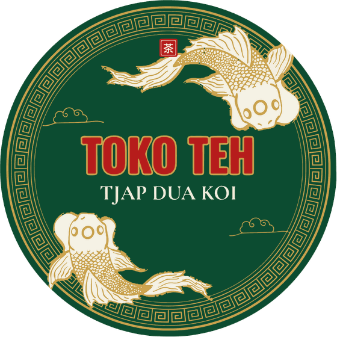

Toko Teh Tjap Dua Koi
Sepasang koi, segelas teh.
Halo, teman! Teh tarik jadi base semua minuman kami: teh tarik, kopi tarik, matcha tarik, houjicha tarik, sampai Milo tarik. Ada bagel dan wrap juga. Mampir dulu, yuk!
Program ajak teman
Cara ikut Teman Tarik
-
Daftar Kolam Koi, ambil kodemu
Gratis, cukup nomor HP. Kode ajakmu langsung muncul di aplikasi.
-
Bagikan ke teman
Kirim lewat WhatsApp. Teman yang baru daftar memakai kodemu.
-
Teman belanja minimal Rp20.000
Teman dapat es teh gratis, kamu juga dapat es teh gratis untuk tiap teman yang berhasil.
Bonus posting: belanja minimal Rp20.000, posting atau story dengan tag @tokoteh.tjapduakoi, lalu kirim buktinya lewat WhatsApp dari Kolam Koi. Setelah kami cek, voucher es teh gratis atau 1 tarikan kartu koi masuk ke akunmu.
Syarat & ketentuan bisa ditanyakan langsung ke kru kami.
Caravan datang ke acaramu
Layanan Event
Bikin tamu betah dengan teh tarik yang ditarik langsung di tempat. Caravan Toko Teh Tjap Dua Koi bisa hadir di acara spesialmu, lengkap dengan kru dan suasana kopitiam tempo dulu. Ceritakan tanggal, lokasi, dan perkiraan jumlah tamu, nanti kami bantu atur.
- Wedding
- Aqiqah
- Lamaran
- Acara kantor
Tempat mampir
Cabang Kami
-
Mahakam Lampion Garden
BukaCaravan Toko Teh di area Mahakam Lampion Garden, Samarinda